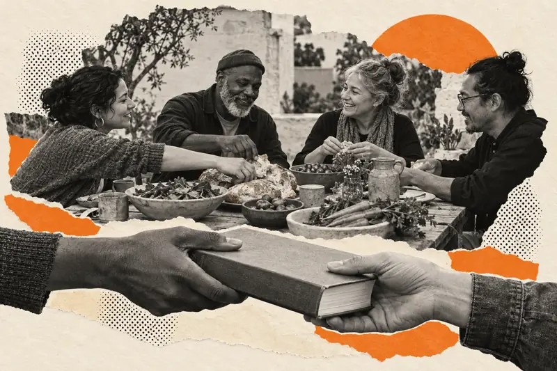
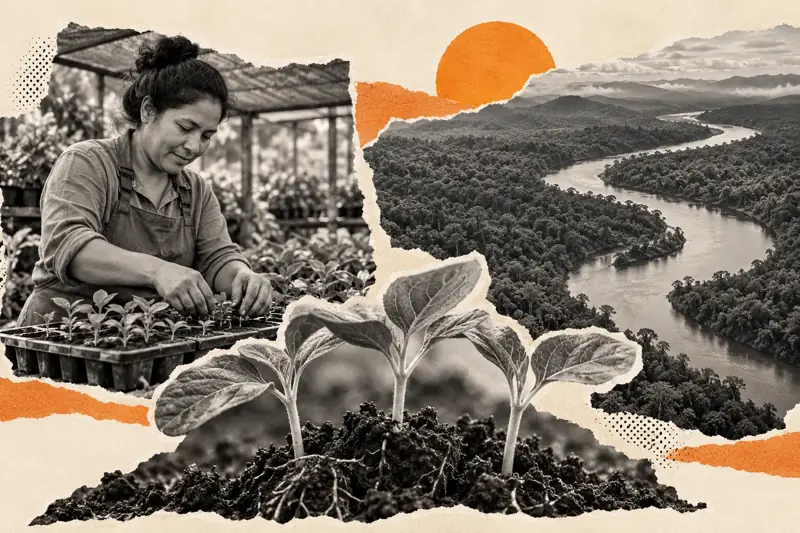
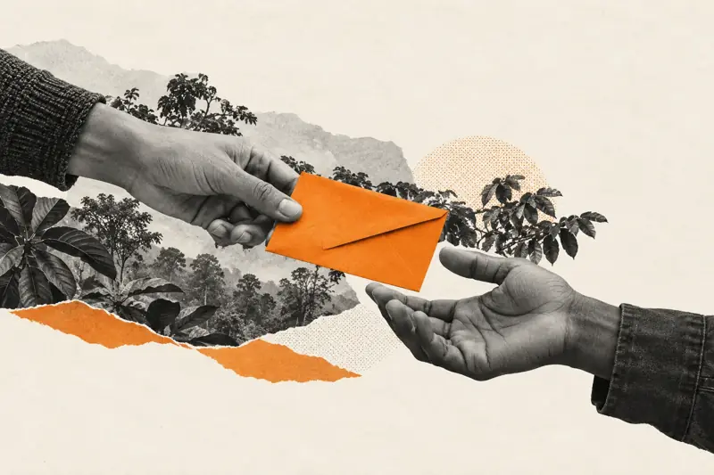

Giving Tuesday. Your guide to giving.
Find ways to donate, fundraise and get involved.
Giving Tuesday is a global day of generosity. Explore the guides below to choose a cause, plan an activity or understand where your donation could make a difference. At Not For Sale, our focus is human trafficking and ecocide, and the conditions that allow people and the natural world to be exploited.
Give someone the chance to give.
You provide the gift. They explore our mission and tell us what matters most to them.
Showing 12 of 12 guides

What is it?
The date, the meaning and a simple way to start.
Read the guide
Where to donate
Choose a cause, check a charity and understand your gift.
Read the guide
Ideas to try
Twelve achievable ways to give, help and get involved.
Read the guide
Tools and templates
Free plans, checklists and messages, ready to adapt.
Read the guide
At work
Company gifts, voluntary team activities and employer matching.
Read the guide
Schools and families
Thoughtful activities for the classroom and at home.
Read the guide
For charities
Build a focused campaign with a plan you can use.
Read the guide
Volunteering
Offer your time, skills or practical help where it is needed.
Read the guide
Against human trafficking
Understand the issue and choose responsible ways to help.
Read the guideAgainst ecocide
Connect environmental giving with people and livelihoods.
Read the guide
Why Not For Sale?
Our approach, reported results and the case for your support.
Read the guide
Make a donation
Check the details and continue to Not For Sale’s giving page.
Read the guide